Матеріали Дентсплай · журнал «ДентАрт» 2014 №4 (77)
П'яте покоління інструментів для препарування кореневих каналів
FIFTH-GENERATION OF DENTAL INSTRUMENTS FOR ROOT CANALS PREPARATION
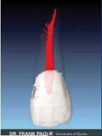
На зорі виникнення сучасної ендодонтії існувало безліч концепцій, стратегій і технік для препарування кореневих каналів. За останні десятиріччя з'являлися десятки інструментів для проходження і формування каналів. Незважаючи на різну форму інструментів, їх кількість і безліч запропонованих технік, до ендодонтичного лікування підходили з оптимізмом, сподіваючись на успіх.
Прорив у галузі клінічної ендодонтії стався при переході від використання довгої послідовності інструментів з неіржавіючої сталі і декількох розгорток Гейтс Глідден/Gates Glidden до застосування нікель-титанових інструментів для препарування кореневих каналів. Незалежно від використовуваних технік, цілі механічної обробки кореневих каналів блискуче сформулював майже 40 років тому доктор Герберт Шілдер/Herbert Schilder.1 При правильному алгоритмі лікування механічна обробка кореневих каналів повинна відповідати біологічним цілям препарування каналів, дезінфекції та тривимірній обтурації (фото 1).
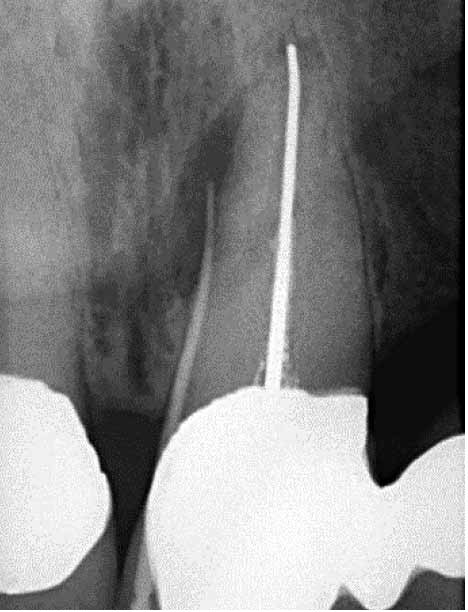

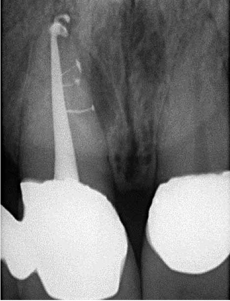
Фото 1.
Препарування кореневих каналів нікель-титановими інструментами
У 1988 році Валіа/Walia запропонував нитинол — нікель-титановий сплав для препарування кореневих каналів, який у 2-3 рази гнучкіший, ніж сплав з неіржавіючої сталі, причому для тих самих розмірів інструментів. Революційним результатом застосування інструментів, виготовлених з нікель-титанового сплаву, стала можливість механічно обробляти викривлені канали, використовуючи безперервне обертання. До середини 1990-х перші серійно випущені нікель-титанові обертові інструменти з'явилися на ринку.3 Нижче подано механічну класифікацію кожного покоління інструментів. Замість того, щоб описувати незліченну кількість існуючих поперечних перерізів інструментів, ми будемо виокремлювати інструменти з пасивною і активною ріжучою здатністю.
Перше покоління
Для оцінки еволюції нікель-титанових інструментів корисно знати, що перше їх покоління мало пасивні радіальні ріжучі грані і фіксовану конусність 4% і 6% по всій довжині активних лез (фото 2).4 Це покоління вимагало багатьох інструментів для досягнення цілей препарування. Із середини і до кінця 1990-х років з'явилися інструменти ДжіТі/GT (Дентсплай/Dentsply), які мали фіксовану конусність на кожному окремому інструменті, що становила 6%, 8%, 10% і 12%. Єдиною найважливішою конструктивною характеристикою першого покоління нікель-титанових обертових інструментів були пасивні радіальні грані, які дозволяли інструментові у процесі роботи залишатися центрованим у вигині кореневого каналу.
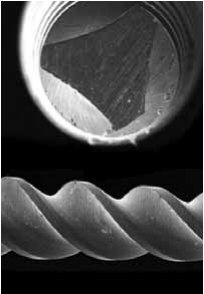
Друге покоління
Друге покоління нікель-титанових обертових інструментів з'явилося на ринку в 2001 році.6 Основна відмінність цього покоління інструментів у тому, що вони мають активні ріжучі грані, і тому потрібно лише кілька інструментів для повноцінного препарування кореневого каналу (фото 3). Щоб уникнути утворення запираючого конуса і, як наслідок, ефекту вкручування, пов'язаного з пасивними і активними нікель-титановими інструментами із заданою конусністю, компанії ЕндоСеквенс/EndoSequence (Брасслер/Brassler) і БіоРейС/BioRaCe (ЕфКаДжі Дентейр/FKG Dentaire) пропонують лінійки інструментів з контактними точками, що чергуються.7 І хоча ця характеристика покликана зменшувати ефект запираючого конуса, ці лінійки інструментів мають фіксовану конусність у ділянці активної ріжучої частини. Клінічний прорив стався, коли на ринку з'явився ПроТейпер/ProTaper (Дентсплай/Dentsply), який має множинну конусність, що збільшується і зменшується на робочій частині одного інструмента. Ця революційна форма з конусністю, що прогресивно змінюється, обмежує ріжучу дію кожного інструмента до певної ділянки каналу, що дозволяє використовувати більш коротку послідовність інструментів для безпечного відтворення форми каналу по Шілдеру (фото 4).8
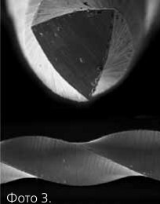
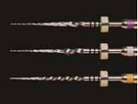
Протягом цього періоду виробники почали активно шукати методи запобігання поломці інструментів. Деякі виробники застосовували електрополірування інструментів, щоб усунути нерівності поверхні, що утворюються при традиційному процесі шліфування. Однак у ході клінічних спостережень і наукових досліджень було встановлено, що електрополірування притупляє ріжучі грані. На практиці помічені переваги електрополірування нівелювалися необхідністю чинити небажаний тиск всередині кореневого каналу при просуванні інструмента на всю робочу довжину. Надлишковий внутрішній тиск, особливо при використанні інструментів з фіксованою конусністю, призводить до утворення ефекту запираючого конуса, ефекту вкручування і надлишкового торку на обертовому інструменті в процесі работи.9 Для компенсації недоліків або неефективної роботи інструмента в результаті електрополірування було запропоновано інші поперечні перерізи інструментів, і незважаючи на побоювання, швидкості обертання були збільшені.
Третє покоління
Удосконалення металургії нікель-титанових сплавів стало відмітною ознакою третього покоління інструментів для механічної обробки кореневих каналів. У 2007 році виробники сконцентрувалися на процесах нагрівання й охолодження сплавів для зниження циклічної втоми і підвищення безпеки при роботі нікель-титановими інструментами у більш викривлених кореневих каналах.10 Бажана точка фазового переходу між мартенситом і аустенітом може ототожнюватися з пошуком клінічно більш оптимального металу, ніж нікель-титан. Третє покоління нікель-титанових інструментів відрізняється значним зниженням циклічної втоми і, відповідно, ризику поломки інструментів. Приклади інструментів, оброблених тепловою дією: Твістед Файл/Twisted File (СібронЕндо/ SybronEndo), Хайфлекс/Hyflex (Колтен Воледент/Coltene Whaledent), ДжіТі/GT, Вортекс/Vortex і ВейвВан/WaveOne (Дентсплай/ Dentsply).
Четверте покоління
Ще один прогресивний крок у препаруванні каналу — реципрокція, яку можна визначити як будь-який повторюваний зворотно-поступальний рух або рух угору-вниз. Цю технологію уперше запропонував наприкінці 1950-х французький дантист Бланк/Blanc. На сьогодні M4 (СібронЕндо/SybronEndo), Ендо Експрес/Endo Express (Ессеншіал Дентал Системс/Essential Dental Systems) та Ендо-Із/Endo-Eze (Ультрадент/Ultradent) — це приклади систем, де кут обертання інструмента за годинниковою стрілкою дорівнює куту його обертання проти годинникової стрілки. Порівняно із системами повного обертання реципрокний інструмент, що обертається на однакові кути за годинниковою стрілкою і проти неї, вимагає більшого тиску всередині кореневого каналу для просування вперед, не ріже так само ефективно, як обертовий інструмент того ж самого розміру, і більш обмежений у витяганні ошурків і продуктів розпаду з каналу.
На підставі цих ранніх дослідів технологія реципрокції неухильно розвивалася, що привело до створення 4-го покоління інструментів для препарування кореневих каналів. Це покоління інструментів і технологія реципрокції втілилися в такому очікуваному одному інструменті. Компанія РеДент-Нова/ReDent-Nova (Генрі Шайн/Henry Schein) створила інструмент, що самоадаптується, (САФ/SAF). Цей інструмент має форму порожнистої трубки, котра стискується; мається на увазі, що інструмент створює рівномірний тиск на дентинні стінки незалежно від поперечного перерізу каналу. Інструмент САФ/SAF механічно обертається за допомогою наконечника, який робить як короткі 0,4 мм вертикальні рухи, так і вібраційні рухи з постійною іригацією.11 Ще одна перспективна техніка одного інструменту називається Ван Шейп/One Shape (Майкро Мега/Micro Mega), про неї буде згадано нижче в розділі про інструменти 5-го покоління.
Безумовно, найбільш популярною концепцією використання одного інструменту є система ВейвВан/WaveOne (Дентсплай Майліфер/Dentsply Maillefer) і Реципрок/Reciproc (ВіДіДаблЮ/VDW). ВейвВан/WaveOne поєднує найліпші дизайнерські характеристики 2-го і 3-го поколінь інструментів і реципрокний двигун, який обертає будь-який інструмент туди-назад на неоднакові кути. Кут руху проти годинникової стрілки у 5 разів більший, ніж кут руху за годинниковою стрілкою, причому він менший межі еластичності інструмента. Через 3 цикли обертань проти і за годинниковою стрілкою інструмент зробить оборот на 360° (фото 5).
Цей новий реципрокний рух дозволяє інструменту легко просуватися, ефективно різати і ефективно видаляти ошурки з кореневого каналу.12
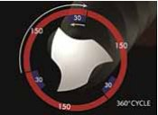
П’яте покоління
П’яте покоління інструментів для препарування каналів відрізняється зміщеним центром ваги і/або центром обертання (фото 6). При обертанні інструментів, що мають подібну форму, виникає механічна хвиля руху, яка переміщується по всій довжині інструмента. Подібно до прогресуючої конусності будь-якого інструмента ПроТейпер/ProTaper, зміщений центр ваги ще більше мінімізує тертя між інструментом і дентином.13 Також подібний дизайн поліпшує видалення ошурків з каналу і поліпшує гнучкість активної частини інструмента ПроТейпер Некст/ProТaper Next. Переваги інструментів зі зміщеним центром ваги будуть описані в цій статті далі.
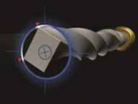
Торгові назви інструментів, що працюють на основі цієї технології: Рево-Ес/Revo-S, Ван Шейп/One Shape (Майкро Мега/Micro Mega) і ПроТейпер Некст/ProTaper Next (Дентсплай Майліфер/Dentsply Maillefer). Сьогодні найбільш безпечні, ефективні та прості системи інструментів використовують перевірені часом характеристики інструментів минулих поколінь у поєднанні з останніми технологічними досягненнями. Нижче наведено короткий технічний опис системи ПроТейпер Некст.
ПроТейпер Некст/РroТaper Next
У новій системі ПроТейпер Некст/ProTaper Next (Дентсплай/Dentsply) 5 інструментів різної довжини для препарування кореневих каналів з порядковим маркуванням X1, X2, X3, X4 і X5 (фото 7). Вони мають колірне кодування — жовтий, червоний, синій, подвійна чорна і подвійна жовта смужки на рукоятці, що відповідає розмірам 17/04, 25/06, 30/07, 40/06 і 50/06, відповідно. Перерахована конусність НЕ є фіксованою по всій робочій частині інструмента ПроТейпер Некст. Уявіть, що інструменти ПроТейпер Некст X1 і X2 мають конусність, яка і підвищується, і знижується на протязі одного і того ж самого інструмента, тоді як інструменти ПроТейпер Некст X3, X4 і X5 мають фіксовану конусність протягом перших 3 мм довжини, а потім конусність, що знижується, на всій решті робочої частини.

Інструменти ПроТейпер Некст — це комбінація трьох істотних конструктивних особливостей, таких як дедалі більша конусність на одному і тому ж самому інструменті, технологія M-вайр і переріз, зміщений від центру.
Як приклад візьмемо інструмент ПроТейпер Некст X1, який має центровану масу і вісь обертання протягом перших 3 мм довжини, тоді як від 4 до 16 мм інструмента X1 мають зміщений поперечний переріз. На протязі від 1 до 11 мм інструмент X1 збільшує свою конусність, стартуючи на позначці 4%, тоді як від 12 до 16 мм конусність знижується, щоб поліпшити гнучкість інструмента і зберегти дентин кореня під час процедури препарування кореневого каналу.
Інструменти ПроТейпер Некст використовуються при швидкості обертання 300 об/хв і торку від 2,0 до 5,2 Н/см. Однак автори надають перевагу торку 5,2 Н см, оскільки цей рівень торку був визнаний безпечним, якщо клініцисти ретельно створюють килимову доріжку і використовують обережні вимітаючі руху назовні при прогресивному препаруванні кореневих каналів.14 У техніці ПроТейпер Некст всі інструменти застосовуються абсолютно однаково, послідовність використання завжди відповідає колірному кодуванні ISO і завжди однакова, незважаючи на довжину, діаметр або кривизну каналу.
Техніка препарування ПроТейпер Некст/ProTaper Next
Техніка препарування ПроТейпер Некст надзвичайно безпечна, ефективна і проста за умови створення гарного доступу і килимової доріжки. Як і при будь-якій іншій процедурі препарування кореневого каналу, велика увага має звертатися на створення прямолінійного доступу до кожного устя. Це передбачає розширення, згладжування і фінішну обробку внутрішніх аксіальних стінок. Для устьового доступу система ПроТейпер пропонує додатковий інструмент під назвою SX. Інструментом SX працюють вимітаючими рухами назовні для попереднього розширення устя, видалення нависаючого дентину, переміщення коронкової частини каналу від зовнішньої кривизни кореня або створення більш вираженої форми.
Напевно, найбільшим випробуванням в ендодонтичному лікуванні є знаходження, проходження і передбачуване збереження форми кореневого каналу до апекса. Проходження та збереження форми каналу за допомогою тонких ручних інструментів вимагає механічної стратегії, мануальних навиків, терпіння і бажання. Ручний інструмент невеликого розміру спочатку використовується для пошуку, розширення та згладжування внутрішніх стінок каналу. Як тільки кореневий канал стане прохідним на всю довжину ручним інструментом, можна використовувати інструмент безперервного обертання для створення килимової доріжки та розширення початкового просвіту каналу перед його формуванням.15 Уточнюємо: канал підготований лише тоді, коли він прохідний і має підтверджену гладеньку і відтворювану килимову доріжку.
Знаючи ймовірну робочу довжину, у присутності в’язкого хелатуючого агента в кореневий канал вводимо файл #10 і аналізуємо, наскільки легко інструмент рухатиметься у напрямку до верхівки кореневого каналу. У більш коротких широких і прямих каналах файл #10 може бути легко введений на всю робочу довжину. При підтвердженні вільного просування файла #10 на всю робочу довжину килимова доріжка може бути додатково розширена або ручним інструментом #15, або спеціально призначеними інструментами, як, наприклад, ПасФайли/PathFiles (Дентсплай/Dentsply). Створена килимова доріжка дає достатній простір для початку механічної обробки інструментом ПроТейпер Некст Х1/ProTaper Next X1.
В інших випадках зуби, що потребують ендодонтичного лікування, можуть мати довші, вужчі і викривленіші кореневі канали (фото 8 а). У таких ситуаціях інструмент #10 найчастіше не проходить на всю довжину кореневого каналу. Як правило, немає необхідності використовувати ручні інструменти #06 і/або #08 при спробі негайно досягти верхівкового отвору. Необхідно просто і акуратно попрацювати ручним інструментом #10 в межах будь-якої ділянки кореневого каналу, доки інструмент не буде повністю розблокований. Інструменти ПроТейпер Некст можуть використовуватися для формування будь-якої ділянки кореневого каналу, що має гладку і відтворювану килимову доріжку. Незважаючи на наявність килимової доріжки і правильну послідовність використання інструментів, кінцевою метою є повне проходження кореневого каналу на всю робочу довжину, встановлення робочої довжини і перевірка апікальної прохідності (фото 8 б). До безпечної роботи з каналом можна братися після перевірки створеної килимової доріжки, коли інструмент #10 не «залипає» на робочій довжині і може повторно ковзати, рухаючись у нижній третині кореневого каналу.
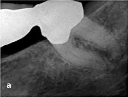
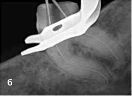
Коли канал підготований, порожнину доступу рясно заповнюють 6% розчином гіпохлориту натрію. Можна починати препарування каналу з інструмента ПроТейпер Некст X1. Слід підкреслити, що при роботі інструментами ПроТейпер Некст ніколи не слід застосовувати рухи, що нагнітають або клюють і спрямовані всередину. Навпаки, з інструментами ПроТейпер Некст працюють вимітаючими рухами, спрямованими назовні. Важливо, що подібний метод використання дозволить будь-якому інструментові ПроТейпер Некст пасивно рухатися в каналі, слідуючи килимовій доріжці, на всю робочу довжину. Інструмент X1 вводиться в порожнину доступу в попередньо розширене устя і підготований канал. Перед тим, як зустріти опір, слід проводити вимітаючі рухи назовні (фото 9 а). Вимітання створює латеральний простір і дозволяє інструментові проникнути на кілька міліметрів всередину. Вимітаючі рухи поліпшують контакт між інструментом і дентином, особливо в каналах, що мають нестандартний поперечний переріз. При зануренні інструмента на кожні наступні кілька міліметрів необхідно витягувати і досліджувати його, паралельно очищаючи ріжучу частину.
Перед повторним введенням інструмента X1 в кореневий канал стратегічно важливим моментом є іригація і вимивання великих ошурків, а також повторне введення інструмента #10 для того, щоб зруйнувати залишкові ошурки і продукти розпаду і перевести їх у розчин, потім проводиться повторна іригація для поновлення розчину. За один або кілька підходів інструментом X1 потрібно досягти робочої довжини. Для ретельного очищення слід проводити іригацію, рекапітуляцію і повторну іригацію після вилучення будь-якого інструмента, що обертається.
Далі використовується ПроТейпер Некст Х2/ProTaper Next X2. Перед появою опору застосовуються латеральні вимітаючі руху від дентинних стінок, що, у свою чергу, буде просувати інструмент X2 всередину кореневого каналу пасивно і прогресивно. Інструмент X2 легко пройде по шляху, створеному інструментом X1, проводячи подальше розширення і поступово просуваючись на всю довжину. При застряванні і блокуванні інструмента слід витягти його, очистити і перевірити грані. Знову проводиться іригація, рекапітуляція і повторна іригація для правильного формування каналу.
Інструментом Х2 потрібно працювати до досягнення робочої довжини, може знадобитися один або кілька підходів, залежно від довжини, ширини і кривизни каналу (фото 9 б).
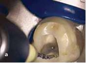
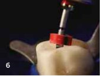
Як тільки інструмент ПроТейпер Некст X2 досягає робочої довжини, він витягується. Створена форма може вважатися завершеною, якщо канавки в апікальній частині інструмента візуально заповнені дентином. Як альтернатива, розмір апекса може бути перевірений ручним інструментом 25/02. Якщо ручний інструмент #25 залипає на робочій довжині, препарування закінчене. Якщо ручний інструмент 25/02 вільно рухається на робочій довжині, це просто означає, що верхівковий отвір ширший, ніж 0,25 мм. У такому випадку апекс може калібруватися ручним інструментом розміру 30/02. Якщо ручний інструмент #30 залипає на робочій довжині — форма створена. Однак якщо ручний інструмент #30 не доходить до апекса, застосовуємо інструмент ПроТейпер Некст X3, дотримуючись тієї ж техніки, що і з ПроТейпер Некст X1 і ПроТейпер Некст X2.
Більшість кореневих каналів буде мати оптимальну форму після застосування ПроТейпер Некст X2 або X3 (фото 10 а). Інструменти ПроТейпер Некст X4 і X5 насамперед використовуються для препарування і фінішної обробки кореневих каналів, що мають більший діаметр. Якщо апікальний отвір більший, ніж розмір ПроТейпер Некст 50/06 X5, зверніться до інших методів препарування подібних широких і більш прямих каналів. Важливо усвідомлювати, що ретельно підготовані канали сприяють формуванню, очищенню і тривимірній обтурації (фото 10 б).
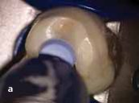
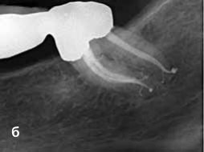
Дискусія
З клінічної точки зору система постійного обертання ПроТейпер Некст об'єднала в собі найбільш перевірені і вдалі особливості дизайну інструментів минулого і останні досягнення науки. Коротка дискусія опише, як дизайн впливає на робочі характеристики інструмента.
Найбільш вдала дизайнерська риса попереднього покоління інструментів — це механічна концепція використання прогресуючої конусності на одному і тому ж самому інструменті. Патент, що захищає систему ПроТейпер Універсал/ProTaper Universal, дозволяє використання як підвищувального, так і знижувального відсотка конусності на одному і тому ж самому інструменті. Ця особливість будови мінімізує контакт між інструментом і дентином, що знижує небезпеку виникнення запираючого конуса і ефекту вкручування, збільшуючи ефективність работи.8 Порівняно з інструментом того ж самого розміру з фіксованою конусністю, відсоток конусності, що знижується, поліпшує гнучкість інструмента, обмежує препарування тіла кореневого каналу і зберігає дентин в коронкових 2/3 кореневого каналу. Маючи переваги механічної будови, ПроТейпер Некст також використовує прогресивну конусність на одному і тому ж самому інструменті. Ця особливість будови зробила істотний внесок у те, щоб система ПроТейпер/ProTaper стала №1 з продажу у світі, інструментом №1 вибору ендодонтистів і системою №1 для навчання в стоматологічних школах усього світу студентів програми бакалаврату.16
Ще одна конструктивна особливість, що дає перевагу окремим маркам ротаційних інструментів, — це металургія. Незважаючи на те, що нікель-титанові інструменти у 2-3 рази гнучкіші, ніж інструменти з неіржавіючої сталі того ж самого розміру, додаткові зміни процесу виробництва у вигляді термічної обробки можуть дати певні переваги. Фахівці компанії звернули увагу на нагрівання та охолодження традиційного нікель-титанового сплаву або до, або після фрезерування. Термічна обробка створює оптимальнішу точку фазового переходу між мартенситом і аустенітом. Потрібно також пам'ятати про те, що найкраща точка фазового переходу залежить від поперечного перерізу інструмента. Дослідження показали, що M-вайр, металургійно поліпшена версія нікель-титанового сплаву, знижує циклічну втому на 400% порівняно з інструментами того ж самого діаметру, поперечного перерізу та конусності. Ця третя перевага цього покоління інструментів є стратегічною для загальної клінічної безпеки і поліпшення робочих характеристик системи обертових інструментів ПроТейпер Некст.
Третя конструктивна особливість інструментів ПроТейпер Некст — це зміщений від центру поперечний переріз. Якщо основна частина інструмента безперервного обертання зміщена від центру, ми можемо говорити про три переваги цього:13
- Усунутий від центру дизайн сприяє утворенню переміщуваної механічної хвилі руху вздовж усієї активної частини інструмента. Такі розгойдуючі рухи сприяють мінімальному зіткненню інструмента та дентину в порівнянні з рухом інструмента з фіксованою конусністю і центрованою масою обертання (фото 11). Знижений контакт обмежує небажаний замикаючий конус, ефект вкручування і торк на будь-якому інструменті.
- Інструмент зі зміщеним перерізом звільняє більше місця для поліпшеного зрізання та евакуації ошурків з кореневого каналу порівняно з інструментом із центрованою масою і віссю обертання (фото 12). Багато інструментів ламаються через надмірне скупчення ошурків та продуктів розпаду між ріжучими лезами по всій активній частині інструмента. Важливо, що інструмент зі зміщеним центром зменшує ймовірність латерального ущільнення ошурків і блокування анатомії кореневого каналу (фото 6).
- Формуючий інструмент зі зміщеною від центру масою обертання створюватиме механічну хвилю руху, аналогічну коливанням, що фіксуються вздовж синусоїди (фото 10). Як наслідок подібної будови, будь-який інструмент ПроТейпер Некст може створити більший діапазон рухів у порівнянні з аналогічним інструментом із симетричною масою і віссю обертання (фото 6). Клінічна перевага цього полягає в тому, що інструмент ПроТейпер Некст, меншого розміру і більш гнучкий, може препарувати простір, аналогічний простору жорсткішого інструмента більшого розміру з центрованою масою і віссю обертання (фото 10).
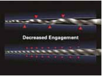
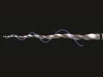
Висновок
Кожне нове покоління формувальних інструментів пропонує щось нове, описується по-різному і замислюється як більш досконале у порівнянні з попереднім. ПроТейпер Некст/Protaper Next став системою п'ятого покоління, яка поєднала випробувані робочі характеристики минулого з останніми технологічними досягненнями. Ця система повинна спростити процедуру формування каналу обертовими інструментами, зменшуючи кількість інструментів і усуваючи так звані гібридні техніки. Клінічно форма каналу, створювана ПроТейпер Некст, відповідає трьом священним догмам — безпеці, ефективності і простоті. З наукової точки зору необхідні доказові дослідження для підтвердження потенційних переваг системи.
Подяка: автори хотіли б висловити вдячність доктору Майклу Дж. Скьянамбло/Michael J. Scianamblo за його роботу і участь у створенні системи ПроТейпер.
Література
- Schilder H. Cleaning and shaping the root canal, Dent Clin North Am 18:2, pp. 269-296, April 1974.
- Walia HM, Brantley WA, Gerstein H: An initial investigation of the bending and torsional properties of Nitinol root canal files, J Endod 14:7, pp. 346-351, 1988.
- Thompson SA. An overview of nickel-titanium alloys used in dentistry, Int Endod J 33:4, pp. 297-310, 2000.
- Bryant ST, Dummer PM, Pitoni C, Bourba M, Moghal S: Shaping ability of .04 and .06 taper ProFile rotary nickel-titanium instruments in simulated root canals, Int Endod J 32:3, pp. 155-164, 1999.
- Kramkowski TR, Bahcall J: An in vitro comparison of torsional stress and cyclic fatigue resistance of ProFile GT and ProFile GT Series X rotary nickel-titanium files, J Endod 35:3, pp. 404-407, 2009.
- Machtou, P, Ruddle CJ: Advancements in the design of endodontic instruments for root canal preparation, Alpha Omegan 97:4, pp. 8-15, 2004.
- Schafer E, Vlassis M: Comparative investigation of two rotary nickel-titanium instruments: ProTaper versus RaCe. Part 2. Cleaning effectiveness and shaping ability in severely curved root canals of extracted teeth, Int Endod J 37:4, pp. 239-248, 2004.
- Ruddle CJ: The ProTaper endodontic system: geometries, features, and guidelines for use, Dent Today 20:10, pp. 60-67, 2001.
- Boessler C, Paque F, Peters OA: The effect of electropolishing on torque and force during simulated root canal preparation with ProTaper shaping files, J Endod 35:1, pp. 102-106, 2009.
- Gutmann JL, Gao Y: Alteration in the inherent metallic and surface properties of nickel-titanium root nickel root canal instruments enhance performance, durability and safety: a focused review, Int Endod J 45:2, pp. 113-128, 2012.
- Metzger Z, Teperovich E, Zary R, Cohen R, Hof R: The self-adjusting file (SAF). Part 1: respecting the root canal anatomy—a new concept of endodontic files and its implementation, J Endod 36:4, pp. 679-690, 2010.
- Yared G: Canal preparation using only one Ni-Ti rotary instrument: preliminary observations, Int Endod J 41:4, pp. 339-344, 2008.
- Hashem AA, Ghoneim AG, Lutfy RA, Foda MY, Omar GA: Geometric analysis of root canals prepared by four rotary NiTi shaping systems, J Endod, 38:7, pp. 996-1000, 2012.
- Blum JY, Machtou P, Ruddle CJ, Micallef JP: Analysis of mechanical preparations in extracted teeth using the ProTaper rotary instruments: value of the safety quotient, J Endod 29:9, pp. 567-575, 2003.
- West JD: The endodontic glidepath: secret to rotary safety, Dent Today 29:9, pp. 86, 88, 90-93, 2010.
- Dentsply International, personal communication.
- Johnson E, Lloyd A, Kuttler S, Namerow K: Comparison between a novel nickel-titanium alloy and 508 nitinol on the cyclic fatigue life of ProFile 25/.04 rotary instruments, J Endod 34:11, pp. 1406-1409, 2008.